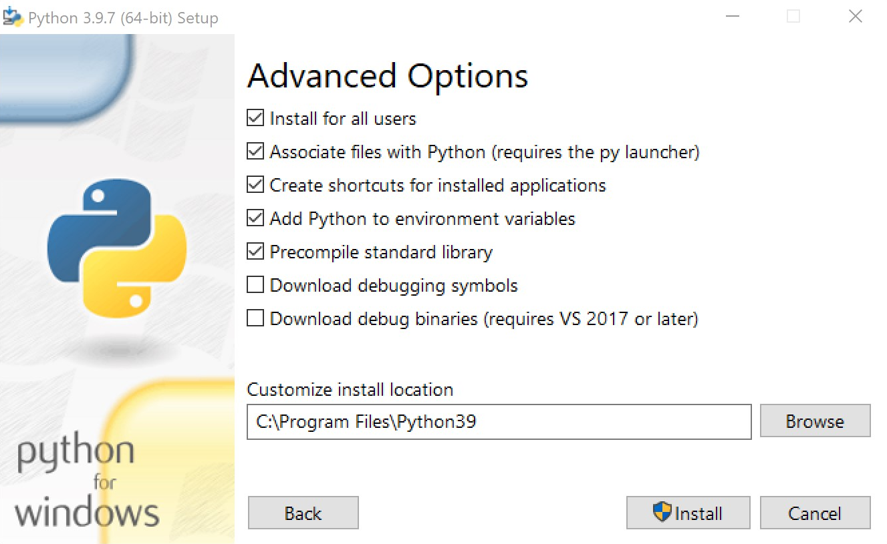

Preparation¶
This page will guide you through the process of setting up your system such that you can follow the tutorial. You have to install Python, Poetry, Docker, and VS Code in order to be able to follow the tutorial. These steps have been successfully tested on Windows 10 and Ubuntu 20.04, however, they should analogously also apply to your favorite Linux distribution or macOS. If you want, you can also use the Windows Subsystem for Linux (WSL). When using WSL you have to install Python and Poetry inside of WSL (we recommend using Ubuntu 20.04 LTS as the distribution so you can follow the steps for Ubuntu). Docker Desktop and VS Code should still be installed on Windows.
We strongly recommend installing VS Code, an open-source IDE developed by Microsoft. VS Code has great support for Python supporting auto completion, linters, type checking, and auto formatting. While you may be able to participate with another IDE or editor, having the features VS Code provides will make your life much easier.
We kindly ask you to follow these steps upfront in preparation of the tutorial.
Ubuntu¶
We recommend installing Python 3.9 from the Deadsnakes PPA:
sudo add-apt-repository -y ppa:deadsnakes/ppa sudo apt-get update -y sudo apt-get install -y python3.9 python3.9-venv
Note that Momba requires at least Python version 3.8. Older versions will not work.
We will be using Poetry for dependency management. Assuming you have installed Python 3.9 run:
python3.9 -m pip install --user poetry
Note that this will install Poetry for the current user only. To use poetry the
bindirectory of the user (~/.local/bin) needs to be in thePATHenvironment variable. This should be the case by default. If runningpoetryfails, you can extend thePATHvariable for the current user by executing (requires restarting the shell to take effect):echo 'PATH="$HOME/.local/bin:$PATH"' >> ~/.profile
Please check that Poetry works with:
poetry --version
To install and enable Docker run:
sudo apt-get install -y docker.io sudo systemctl enable --now docker sudo groupadd -f docker sudo usermod -aG docker $USER
This will also add a group
dockerand add the current user to it (required to executedocker).To pull the Docker image required for Storm run:
docker pull movesrwth/storm:travis
This command will download the required image so that it is already present on the day of the tutorial. In case Docker is not running, this command will fail. Without Docker, you will not be able to run Storm.
To install VS Code from the official sources run:
wget -O /tmp/vscode.deb "https://code.visualstudio.com/sha/download?build=stable&os=linux-deb-x64" sudo apt-get install -y /tmp/vscode.deb
Note that this will automatically add an APT repository for future automatic updates.
Windows¶
We recommend installing Python 3.9 using the official installer: On the first page of the installer, choose Customize installation. When presented with the Optional Features just hit Next without changing anything. In the next step, the Advanced Options will show up. Please configure them as follows:
On the final page of the installer select Disable path length limit and then Close the installer.
In case Python is already installed on your system, we trust that you know how to adapt the following steps to work with the existing installation. If you are in doubt, you may want to remove the existing installation and reinstall it as described here. This ensures that everything works as expected.
We will be using Poetry for dependency management. Assuming you have installed Python 3.9 open a PowerShell as administrator. Right click on the start menu and select Windows PowerShell (Admin). Then run:
pip install poetry
To install Docker, use the Docker Desktop installer without changing any settings.
To pull the Docker image required for Storm inside a PowerShell run:
docker pull movesrwth/storm:travis
This command will download the required image so that it is already present on the day of the tutorial. In case Docker is not running, this command will fail. Without Docker, you will not be able to run Storm.
To install VS Code, use the official installer.